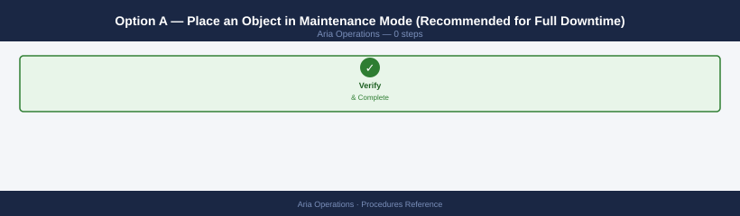
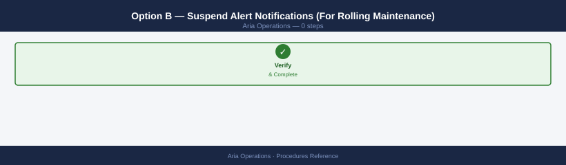
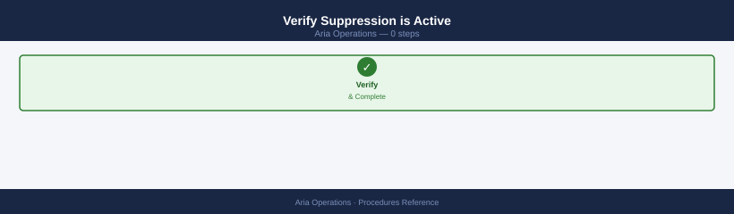
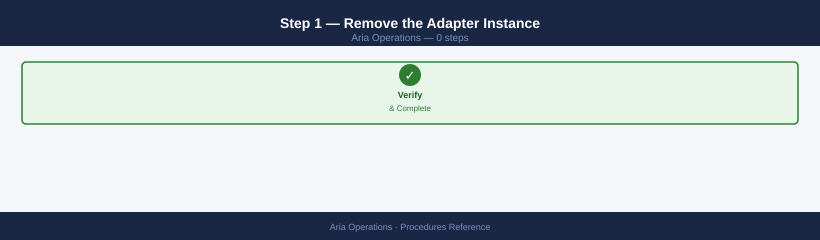
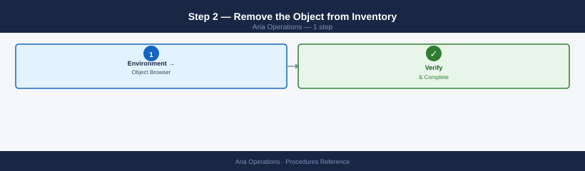
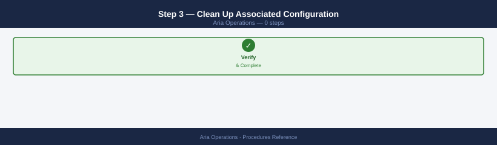
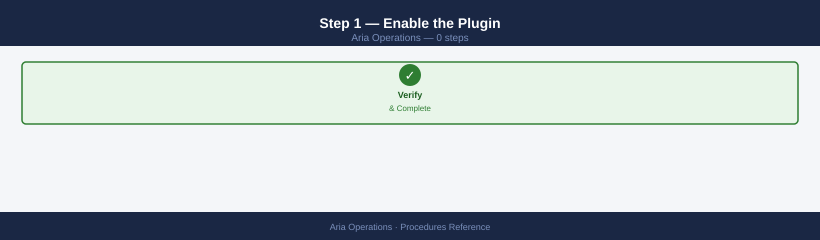
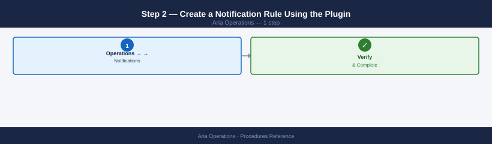
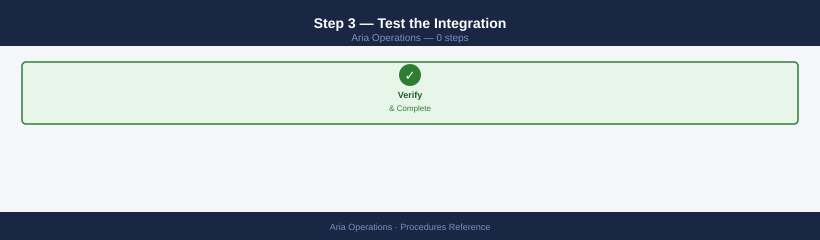

Aria Operations Procedures¶
Before you begin¶
- Access: vCenter read-only minimum; Administrator role for remediation steps
- Timing: safe to run during business hours unless a step is marked ⚠ (causes interruption)
- Dependencies: no active upgrades or migrations on the same infrastructure
- Logging: capture command output — paste into the change record on completion
Add an Adapter Instance¶
Adapter instances connect Aria Operations to data sources — vCenter, NSX, physical hardware, cloud accounts.
- Aria Ops → Data Sources → Cloud Accounts (for vSphere/NSX) or Integrations (for third-party adapters)
- Click Add Account → select the adapter kind (vSphere, NSX-T, AWS, etc.)
- Enter the adapter target details: FQDN/IP, credentials
- Click Validate Connection — confirm the green tick before saving
- Click Add — the adapter begins collecting data immediately
- Verify collection: after 5–15 minutes, navigate to the target object in Environment → Object Browser and confirm metrics are populating
Add the adapter to a collector group if the target is in an isolated network: - Edit the adapter instance → change Collector/Group to the appropriate remote collector
Update Adapter Credentials¶
When a service account password changes, update the stored credentials before the adapter goes red.
- Aria Ops → Data Sources → locate the affected adapter instance
- Click Edit on the adapter → update the Credentials field with the new password
- Click Test Connection — must pass before saving
- Click Save → confirm the adapter returns to green status within one collection cycle
Add a Remote Collector¶
Remote collectors reach isolated networks (DMZ, remote sites) without exposing the primary cluster.
- Deploy the remote collector OVA to the target network segment
- During OVA deployment, set the primary cluster FQDN and admin credentials
- Aria Ops → Administration → Remote Collectors — the new collector appears with Online status
- Assign adapter instances to the collector: edit each adapter → change Collector/Group to the remote collector
- Confirm data is flowing: Administration → Remote Collectors → select collector → verify all assigned adapters show green
Configure an Alert Policy¶
Policies define symptom thresholds and alert priorities for a set of objects.
- Aria Ops → Configure → Policies → Add Policy
- Enter a policy name and description; optionally clone from the Default Policy as a baseline
- Under Alert/Symptom Definitions, modify thresholds for the relevant object types:
- Example: CPU Workload > 85% for 15 minutes → Symptom: Critical
- Example: Datastore Capacity > 80% → Symptom: Warning
- Set Alert Actions — which notification plugin fires when an alert triggers
- Click Save — the policy is inactive until assigned to an object group
- Assign the policy: Policies tab → select the policy → Apply to Groups → select target groups
Create a Custom Group¶
Custom groups scope policy assignments and dashboard filters to specific objects.
- Aria Ops → Environment → Custom Groups → Add Group
- Set the group type: Custom (manual membership) or Dynamic (auto-membership based on criteria)
- For dynamic groups, set membership criteria:
- Object type: VirtualMachine
- Property filter: e.g.,
summary|tag|Environment = "Production" - Click Preview Members to verify the membership before saving
- Click Save — the group is now available for policy assignment and dashboard filters
Assign a policy to the group: Configure → Policies → select policy → Apply to Groups.
Configure SMTP Notifications¶
SMTP must be configured before email notification rules will deliver.
- Aria Ops → Administration → Outbound Settings → Add Outbound Plugin
- Select Standard Email plugin
- Configure:
- SMTP host: relay FQDN or IP
- SMTP port: 25 (plain), 587 (STARTTLS), or 465 (SSL)
- Sender address:
aria-ops@example.local - Authentication: enable if relay requires credentials
- Click Test — confirm a test email arrives at the specified address
- Click Save
Reference the outbound plugin in notification rules: Configure → Notifications → Add Rule → Action → Standard Email.
Configure a Notification Rule¶
- Aria Ops → Configure → Notifications → Add
- Select the trigger: Alert severity (Critical, Immediate, Warning) or specific Alert Definition
- Set the filter scope: all objects, a custom group, or specific object types
- Under Action, select the outbound plugin (SMTP email or webhook)
- Configure the email/webhook details for this rule
- Click Test — confirms the notification delivers before saving
- Click Save — rule is immediately active
Install a Management Pack (Solution)¶
Management packs extend Aria Ops with adapters and dashboards for third-party products.
- Obtain the PAK file for the management pack from the vendor or VMware Marketplace
- Aria Ops → Administration → Repository → Upload → select the PAK file
- Review the certificate warning — click Install to proceed
- Once installed, navigate to Data Sources → the new adapter kind is now available
- Add adapter instances for the new management pack as needed
Create a Custom Dashboard¶
- Aria Ops → Visualize → Dashboards → New
- Enter a dashboard name and description; set visibility: Private or Shared with group
- Drag widgets from the widget panel:
- Metric Chart — time-series metrics for selected objects
- Topology Graph — object relationship visualisation
- Alert List — active alerts filtered by scope or severity
- Heatmap — colour-coded object health across a group
- Configure each widget: select object type, specific objects, and metric or alert filter
- Arrange and resize widgets → click Save
- Share: Actions → Share → select the user group
Generate a Report¶
Reports export object metrics, alert summaries, and capacity data to PDF or CSV.
- Aria Ops → Visualize → Reports → Add Report Template
- Select a built-in template (e.g., "VM CPU Report", "Capacity Summary") or start from blank
- Add report sections: select object type, time range, and metrics to include
- Click Generate to produce an immediate report or Schedule to deliver on a recurring basis
- Scheduled reports are emailed to the configured recipient list via the SMTP outbound plugin
Create a Super Metric¶
Super metrics aggregate metrics from multiple objects or calculate derived values.
- Aria Ops → Configure → Super Metrics → Add Super Metric
- Build the formula using the formula editor:
- Example: average CPU across all VMs in a cluster:
avg(${this, metric=cpu|usage_average, depth=2, where=objecttype=VirtualMachine}) - Set the object type this super metric applies to (e.g., Cluster Compute Resource)
- Click Save → assign the super metric to a policy to enable collection
- Verify collection: navigate to a cluster object → Metrics tab → locate the super metric
Reclaim Idle VM Resources¶
Approved actions immediately right-size or power off VMs via vCenter
When you click Approve, Aria Operations schedules the action against vCenter without further confirmation. A "power off" recommendation will power off the VM. Review the VM name, owner, and application tag before approving — idle resource detection does not distinguish between genuinely unused VMs and batch-scheduled or after-hours workloads that happen to be quiet during the observation window.
- Aria Ops → Optimize → Reclamation → Idle VMs
- Review the list of VMs with sustained low CPU, memory, and network utilisation
- Each VM shows projected savings (vCPU, memory, storage)
- For each VM: Approve (Aria Ops schedules the right-sizing action) or Defer (snooze)
- Approved actions are executed via vCenter — VMs are right-sized or powered off
- Track savings: Optimize → Reclamation → Savings tab
Query Idle VMs via API¶
# Acquire token
TOKEN=$(curl -sk -X POST "https://vrops-prod-01.example.local/suite-api/api/auth/token/acquire" \
-H "Content-Type: application/json" \
-d '{"username":"admin","authSource":"local","password":"<pw>"}' \
| jq -r '.token')
# Query idle VMs (CPU < 5%, connected)
curl -sk -H "Authorization: vRealizeOpsToken $TOKEN" \
"https://vrops-prod-01.example.local/suite-api/api/resources/query" \
-H "Content-Type: application/json" \
-X POST \
-d '{
"resourceKind": ["VirtualMachine"],
"propertyConditions": {
"conditions": [
{"key": "summary|guest|mks|connectionState", "operator": "EQ", "stringValue": "connected"},
{"key": "cpu|usage_average", "operator": "LT", "doubleValue": 5.0}
]
}
}' | jq '.resourceList[] | {name: .resourceKey.name, cpuAvg: .properties["cpu|usage_average"]}'
Export Metrics Data via API¶
# Acquire token
TOKEN=$(curl -sk -X POST "https://<aria-ops>/suite-api/api/auth/token/acquire" \
-H "Content-Type: application/json" \
-d '{"username":"admin","authSource":"local","password":"<pw>"}' \
| jq -r '.token')
# Get resource ID for a VM by name
curl -sk -H "Authorization: vRealizeOpsToken $TOKEN" \
"https://<aria-ops>/suite-api/api/resources?name=<vm-name>&resourceKind=VirtualMachine" \
| jq '.resourceList[].identifier'
# Export metric rollup for the resource
curl -sk -H "Authorization: vRealizeOpsToken $TOKEN" \
"https://<aria-ops>/suite-api/api/resources/<resource-id>/stats?statKey=cpu|usage_average&rollUpType=AVG&intervalType=HOURS&intervalQuantifier=24" \
| jq '.values[].stat-list.stat[]'
Token lifetime is 60 minutes; re-acquire for long-running scripts.
Trigger a Test Notification¶
curl -sk -X POST -H "Authorization: vRealizeOpsToken $TOKEN" \
"https://vrops-prod-01.example.local/suite-api/api/notifications/test" \
-H "Content-Type: application/json" \
-d '{"notificationRuleId":"<rule-id>"}'
Generate a Support Bundle¶
Via UI: Administration → Support → Generate Support Bundle — downloads directly from the browser.
Via CLI:
ssh admin@vrops-prod-01.example.local
vracli support bundle generate
# Confirm bundle location
ls -lh /storage/log/support-bundle/
# Download to local machine
scp admin@vrops-prod-01.example.local:/storage/log/support-bundle/*.zip .
Upgrade Aria Operations (via Aria Suite Lifecycle)¶
- Pre-upgrade snapshot — take VM snapshots of all Aria Operations nodes (master, data, remote collectors) before starting
- Verify LCM has the upgrade bundle: LCM UI → Lifecycle Operations → Settings → Binary Mapping → confirm the target Aria Operations version is listed with status Available
- LCM UI → Environments → select the environment containing Aria Operations → Products → click Aria Operations
- Click Upgrade → select the target version from the dropdown
- Click Run Precheck — all checks must pass before proceeding; resolve any failures (NTP drift, disk space, credential expiry)
- Click Upgrade → confirm the upgrade plan → click Proceed
- Monitor progress: LCM shows per-product upgrade stages; expect 45–90 minutes depending on cluster size
- Post-upgrade validation:
- Verify all adapters collecting: Administration → Solutions — all adapter instances must show green
- Verify alert policies: Configure → Policies — confirm custom policies are intact and applied to correct object groups
- Check Cassandra health: SSH to master node →
su -s /bin/bash vcops-svc -c "cd /usr/lib/vmware-vcops/cassandra/bin && ./nodetool status"— all nodes showUN - Delete VM snapshots after 48 hours of confirmed stable operation
Add a Remote Collector Group¶
Remote Collector Groups (RCGs) pin adapter collection to a specific set of remote collectors — essential for isolated network segments (DMZ, remote sites, cloud VPCs).
- Aria Ops → Administration → Remote Collectors → Remote Collector Groups → Add Group
- Enter a group name (e.g.,
rcg-dmz-segment,rcg-site-london) - From the Available Collectors list, select the remote collectors to add → move to Selected Collectors
- Click Save — the group is immediately available for adapter assignment
- Assign adapters to the group: Data Sources (or Integrations) → edit each adapter instance → set Collector/Group to the new RCG
- Verify: Administration → Remote Collector Groups → select the group → confirm all assigned adapters show green collection status
When an adapter is pinned to an RCG, Aria Operations load-balances collection across all collectors in that group; removing a collector from the group immediately shifts load to remaining collectors.
Configure Alert Criticality and Business Hours¶
- Aria Ops → Alerts → Alert Policies → select the target policy → Edit
- Under the Alerts tab, locate the alert definition → set Criticality from the dropdown:
Critical,Immediate,Warning, orInformation - To configure Business Hours: Edit Policy → Business Hours tab → enable Business Hours → define the schedule (days, start time, end time, timezone)
- Set Non-Business Hours Behavior: choose
Defer notifications(Aria Ops holds alerts until the next business window opens) orSuppress alerts entirely - Click Save
- Verify: trigger a test condition outside business hours → confirm the notification is deferred and fires at the next business window open time
Business hours apply per-policy; assign different policies to production vs. non-production object groups to reduce off-hours alert noise without silencing critical production alerts.
Create a Custom Alert Definition¶
- Aria Ops → Configure → Alerts → Alert Definitions → Add
- Enter Name and Description; set Impact: select the object type this alert targets (e.g.,
VirtualMachine,Datastore) - Symptoms tab → Add Symptom → Metric / Property Symptom:
- Select metric (e.g.,
cpu|usage_average) - Operator:
>value:90, duration:15minutes → set symptom criticality:Critical - Add additional symptoms as needed; set Condition to
ANY(alert fires on first match) orALL - Recommendations tab → Add Recommendation → enter remediation instructions (supports links to KB articles)
- Click Save
- Activate: assign the alert definition to a policy — Configure → Policies → edit policy → Alert/Symptom Definitions → enable the new definition
- Test: reproduce the threshold condition on a test object; confirm the alert fires in Alerts → All Alerts with the correct severity within two collection cycles
Configure LDAP / Identity Source Integration¶
- Aria Ops → Administration → Access Control → Identity Sources → Add
- Select type: LDAP or Active Directory (Integrated Windows Auth)
- Enter LDAP connection details:
- LDAP URL:
ldap://ad.example.local:389(orldaps://for TLS, port 636) - Base DN:
DC=example,DC=local - Bind DN:
CN=svc-vrops,OU=Service Accounts,DC=example,DC=local - Bind Password: service account password
- User Search Base and Group Search Base if non-standard
- Click Test — confirm the bind succeeds and user/group search returns results
- Click Save → Import Groups: search for and import the AD groups that need Aria Ops access
- Assign roles to groups: Access Control → Groups → select imported group → Edit → assign role (
Administrator,Content Admin,Read Only, or a custom role) - Verify: log out → log in using an AD user in the imported group → confirm the correct role is applied and object visibility matches the role scope
Configure Data Retention (Rollup Periods)¶
Reducing retention permanently purges historical metrics
When you lower a retention period, Aria Operations triggers a background Cassandra compaction to delete older data. Purged metrics cannot be recovered. If the historical data is needed for a capacity planning report or trend analysis, export it via the API or generate the required reports before reducing retention.
Default retention: raw metrics 6 months, hourly rollup 1 year, daily rollup 5 years. Reduce raw retention to save disk; extend daily rollup for long-term capacity trending.
- Aria Ops → Administration → Global Settings → Data Retention
- Edit the retention periods:
- Raw data: 1–6 months (reduce to 3 months on disk-constrained clusters)
- Hourly rollup: 6–18 months
- Daily rollup: 1–5 years
- Click Save
- If prompted, restart the analytics service: SSH to master →
systemctl restart vmware-vcops-analytics; the service restarts in ~3–5 minutes - Verify the new settings applied: Administration → Global Settings → Data Retention → confirm saved values
Reducing raw retention triggers a background purge of older data; disk reclamation appears within 24–48 hours as Cassandra compaction completes.
Configure a Cost Metric (Aria Cost Integration)¶
- Aria Ops → Administration → Configuration → Cost Drivers (or Cost Settings depending on version)
- Define rates per unit:
- CPU rate: cost per GHz per month (e.g.,
$0.012) - Memory rate: cost per GB per month (e.g.,
$0.008) - Disk rate: cost per GB per month (e.g.,
$0.0003) - Assign rates to scopes: select cloud accounts or vSphere clusters → apply the rate card
- Click Save
- Wait for the next collection cycle (typically 5 minutes) → verify cost data appears in:
- Optimize → Cost → select a VM or cluster → confirm Cost tab shows calculated values
- Built-in VM Cost and Cluster Cost dashboards populate
For Cloudhealth integration: Administration → Integrations → Cloudhealth → enter API key → map cloud accounts; cost data flows into Aria Ops dashboards after the first Cloudhealth sync (up to 24 hours).
Restart a Failed Adapter Service¶
When an adapter shows "Not Collecting" in the Solutions page:
- UI restart: Administration → Solutions → select the adapter instance → Actions → Restart Adapter Instance → wait one collection cycle → verify status returns to green
- Service-level restart (if UI restart fails):
- Check adapter logs for root cause:
- Common causes and fixes:
Authentication failed→ update credentials: Data Sources → edit adapter → update password → Test ConnectionConnection refused/timeout→ verify network path from collector to target; check firewall rulesCertificate validation failed→ add target cert to Aria Ops trust store or disable SSL verification for internal hosts- After fixing root cause, re-run UI restart and confirm green status within one collection cycle
Suppress Alerts During a Maintenance Window¶
Alert suppression prevents Aria Operations from firing notifications for expected conditions during planned downtime. Without suppression, maintenance activities generate hundreds of false alerts.
Two suppression mechanisms are available: Alert Suspension (suppress alert notifications without clearing the alert) and Maintenance Mode (marks an object as under maintenance, pausing collection and alert generation entirely).
Option A — Place an Object in Maintenance Mode (Recommended for Full Downtime)¶

Use when the object will be unavailable (e.g., a host being patched):
- Navigate to Environment → Object Browser → find the object (host, VM, cluster)
- Right-click the object → Maintenance Mode → Start Maintenance Mode
- Set the duration — Aria Operations resumes monitoring automatically when the window expires
- During maintenance mode: collection is paused, no metrics collected, no alerts fired for the object or its children
# Set maintenance mode via API (useful for scripted pre-maintenance)
curl -sk -u 'admin:password' \
-X POST \
-H "Content-Type: application/json" \
-d '{"resourceId": "<object-id>", "maintenanceSchedule": {"startTime": 0, "endTime": <epoch-ms>}}' \
"https://<aria-ops-fqdn>/suite-api/api/resources/<object-id>/maintained"
Option B — Suspend Alert Notifications (For Rolling Maintenance)¶

Use when the object remains monitored (metrics still collected) but notifications should be quiet:
- Navigate to the object → Alerts tab → filter to the alert types you expect
- Select alerts → Suspend → set duration
- Or: navigate to Operations → Alerts → filter by object → bulk suspend
Verify Suppression is Active¶

- Object shows a wrench icon in Environment Browser during maintenance mode
- Alert list shows suppressed alerts with a "Suspended" badge
- After the window, confirm alerts resume and maintenance mode clears automatically
Children inherit maintenance mode
When a cluster or datacenter object enters maintenance mode, all child objects (hosts, VMs) also enter maintenance mode. Verify scope before applying at the parent level to avoid silencing alerts for more objects than intended.
Remove an Adapter Instance (Decommission Monitoring)¶
Use when permanently removing a monitored system — decommissioning the adapter stops collection and removes the object from Aria Operations inventory.
Step 1 — Remove the Adapter Instance¶

- Navigate to Data Sources → Integrations → Repository
- Find the adapter instance for the system being decommissioned (filter by product type)
- Select the instance → Delete
Deleting the adapter instance deletes all collected metrics history for that system
Historical metric data for the monitored object is permanently deleted when the adapter instance is removed. If you need to retain history for audit or capacity planning, export the relevant reports or metrics before deleting. There is no undo.
Step 2 — Remove the Object from Inventory¶

After deleting the adapter instance, the object may still appear in the inventory for up to one collection cycle (typically 5 minutes):
- Environment → Object Browser → search for the decommissioned system's name
- If still listed: right-click → Delete — forces immediate removal from inventory
- If the object reappears after deletion, the adapter instance was not fully removed — re-check Data Sources → Integrations → Repository
Step 3 — Clean Up Associated Configuration¶

- Remove any alert policies that were targeted at the decommissioned system (or that reference it via a custom group)
- Remove the system from any custom groups: Environment → Custom Groups → edit groups and remove the object
- Update any dashboards that displayed data from the removed system
Configure an Outbound Plugin (ITSM / Webhook Integration)¶
Outbound plugins push Aria Operations alerts to external systems — typically an ITSM (ServiceNow, Jira) or a webhook receiver (Slack, Teams, PagerDuty). This is separate from SMTP notifications.
Step 1 — Enable the Plugin¶

- Navigate to Data Sources → Integrations → Outbound
- Click Add → select the plugin type:
- REST — for generic webhook endpoints (Slack, PagerDuty, custom)
- ServiceNow — built-in ServiceNow ITSM plugin (requires ServiceNow plugin installation)
- Email — SMTP (covered separately in "Configure SMTP Notifications")
- Fill in the plugin configuration:
- URL — endpoint URL of the receiving system
- Authentication — None / Basic / Token / OAuth2 (match the receiver's requirements)
- Payload template — JSON body to send; use
$alertName,$resourceName,$severityplaceholders
Step 2 — Create a Notification Rule Using the Plugin¶

Plugins alone don't send anything — they must be referenced in a Notification Rule:
- Operations → Notifications → Alert Notifications → Add
- Set the Trigger: scope (all objects or a specific group), alert type, severity threshold
- Set the Action: select the outbound plugin configured in Step 1
- Set Notification Frequency: on alert creation / on state change / periodically while active
- Save and enable
Step 3 — Test the Integration¶

- Edit the notification rule → Test Action — Aria Operations sends a test payload to the plugin endpoint
- Verify receipt on the receiving end (Slack message, PagerDuty incident, webhook log)
- If the test fails:
- Check connectivity: from the Aria Operations VM,
curl -sk <url>should return a response - Check authentication: verify the token/credential is not expired
- Check payload: some receivers require specific content-type headers or JSON schema — adjust the template
See also¶
Verify¶
- Alarms: vSphere Client → Home → Alarms — no new critical alarms after the operation
- Events: monitor the vCenter Events view for the affected object for 5 minutes
- Health check: run the morning health-check sequence for the affected product tier